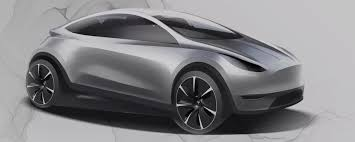
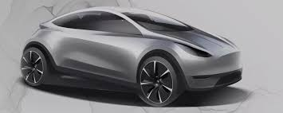

Welcome to The World of Tesla
Tesla is accelerating the world's transition to sustainable energy with electric cars, solar and integrated renewable energy solutions for homes and businesses. Tesla was founded in 2003 by a group of engineers who wanted to prove that people didn’t need to compromise to drive electric – that electric vehicles can be better, quicker and more fun to drive than gasoline cars. Today, Tesla builds not only all-electric vehicles but also infinitely scalable clean energy generation and storage products. Tesla believes the faster the world stops relying on fossil fuels and moves towards a zero-emission future, the better.
Launched in 2008, the Roadster unveiled Tesla’s cutting-edge battery technology and electric powertrain. From there, Tesla designed the world’s first ever premium all-electric sedan from the ground up – Model S – which has become the best car in its class in every category. Combining safety, performance, and efficiency, Model S has reset the world’s expectations for the car of the 21st century with the longest range of any electric vehicle, over-the-air software updates that make it better over time, and a record 0-60 mph acceleration time of 2.28 seconds as measured by Motor Trend.
 
